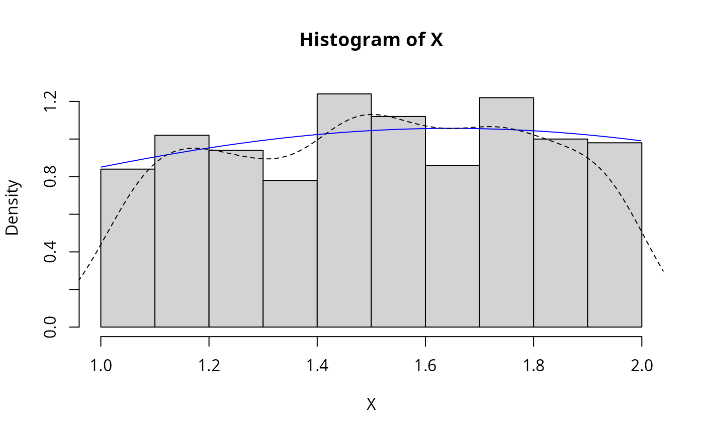

Normal_trunc_ab.RdDensity, distribution, quantile, random number
generation and parameter estimation functions for the truncated normal distribution with parameters mean, sd and
a and b which represent the lower and upper truncation points respectively.
Parameter estimation can be based on a weighted or unweighted i.i.d. sample and is performed numerically.
dNormal_trunc_ab( x, mu = 0, sigma = 1, a = 0, b = 1, params = list(mu, sigma, a, b), ... ) pNormal_trunc_ab( q, mu = 0, sigma = 1, a = 0, b = 1, params = list(mu = 2, sigma = 5, a = 0, b = 1), ... ) qNormal_trunc_ab( p, mu = 0, sigma = 1, a = 0, b = 1, params = list(mu = 2, sigma = 5, a = 0, b = 1), ... ) rNormal_trunc_ab( n, mu = 0, sigma = 1, a = 0, b = 1, params = list(mu, sigma, a, b), ... ) eNormal_trunc_ab(X, w, method = "numerical.MLE", ...) lNormal_trunc_ab( X, w, mu = 0, sigma = 1, a = 0, b = 1, params = list(mu, sigma, a, b), logL = TRUE, ... )
| x, q | A vector of quantiles. |
|---|---|
| mu, sigma | Shape parameters. |
| a, b | Boundary parameters. |
| params | A list that includes all named parameters. |
| ... | Additional parameters. |
| p | A vector of probabilities. |
| n | Number of observations. |
| X | Sample observations. |
| w | An optional vector of sample weights. |
| method | Parameter estimation method. |
| logL | logical;if TRUE, lNormal_trunc_ab gives the log-likelihood, otherwise the likelihood is given. |
dNormal_trunc_ab gives the density, pNormal_trunc_ab the distribution function, qNormal_trunc_ab the quantile function, rNormal_trunc_ab generates random variables, and eNormal_trunc_ab estimates the parameters. lNormal_trunc_ab provides the log-likelihood function.
If the mean, sd, a or b are not specified they assume the default values of 0, 1, 0, 1 respectively.
The dNormal_trunc_ab(), pNormal_trunc_ab(), qNormal_trunc_ab(),and rNormal_trunc_ab() functions serve
as wrappers of the dtrunc, ptrunc, qtrunc, and
rtrunc functions in the truncdist package. They allow for the parameters to be declared not only as
individual numerical values, but also as a list so parameter estimation can be carried out.
The probability density function of the doubly truncated normal distribution is given by
$$f(x) = \sigma^{-1} Z(x-\mu/\sigma)[\Phi(b-\mu/\sigma) - \Phi(a-\mu/\sigma)]^{-1}$$
where \(\infty <a \le x \le b < \infty\). The degrees of truncation are \(\Phi((a-\mu)/\sigma)\) from below and \(1-\Phi((a-\mu)/\sigma)\)
from above. If a is replaced by \(-\infty\), or b by \(\infty\), the distribution is singly truncated, (Johnson et.al, p.156).
The upper and lower limits of truncation \(a\) and \(b\) are normally known
parameters whereas \(\mu\) and \(\sigma\) may be unknown. Crain (1979) discusses parameter estimation for the truncated normal
distribution and the method of numerical maximum likelihood estimation is used for parameter estimation in eNormal_trunc_ab.
Johnson, N. L., Kotz, S. and Balakrishnan, N. (1994) Continuous Univariate Distributions,
volume 1, chapter 13, Wiley, New York.
Crain, B.R (1979). Estimating the parameters of a truncated normal distribution, Applied Mathematics and Computation,
vol 4, pp. 149-156
ExtDist for other standard distributions.
Haizhen Wu and A. Jonathan R. Godfrey.
Updates and bug fixes by Sarah Pirikahu.
# Parameter estimation for a distribution with known shape parameters X <- rNormal_trunc_ab(n= 500, mu= 2, sigma = 5, a = 1, b = 2) est.par <- eNormal_trunc_ab(X); est.par#> #> Parameters for the Normal_trunc_ab distribution. #> (found using the numerical.MLE method.) #> #> Parameter Type Estimate #> mu shape 1.646480 #> sigma shape 0.980794 #> a boundary 1.000801 #> b boundary 1.998243 #> #># Fitted density curve and histogram den.x <- seq(min(X),max(X),length=100) den.y <- dNormal_trunc_ab(den.x,params = est.par) hist(X, breaks=10, probability=TRUE, ylim = c(0,1.2*max(den.y)))#> $a #> [1] 1.000801 #> #> $b #> [1] 1.998243 #>#> $mu #> [1] 1.64648 #> #> $sigma #> [1] 0.980794 #># log-likelihood function lNormal_trunc_ab(X,param = est.par)#> [1] 2.096838